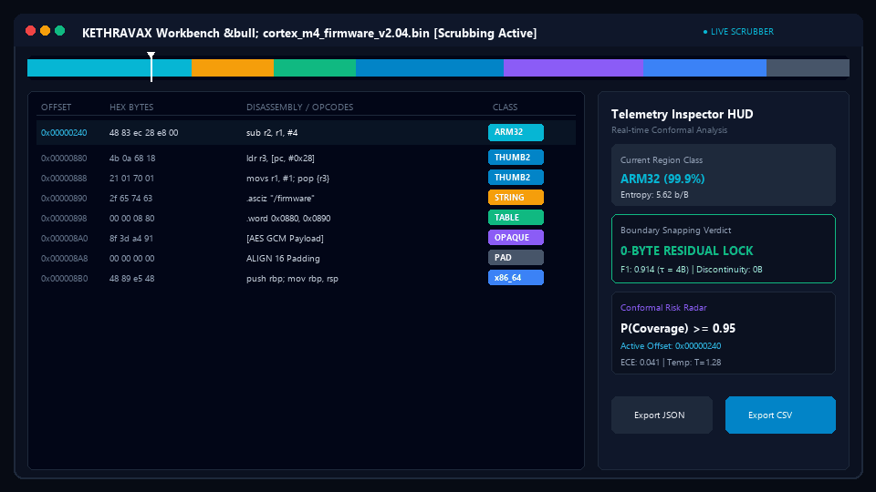
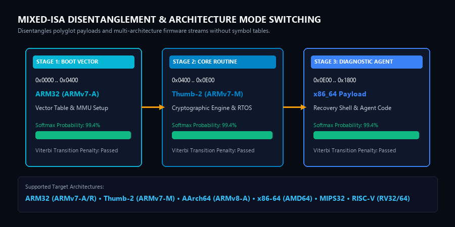

Deconstruct Raw Binary Streams
Without Headers or Containers
Reverse engineer embedded firmware dumps, bare-metal memory slices, and stripped machine code without ELF, PE, or Mach-O metadata. KETHRAVAX decomposes raw byte streams into exact, contiguous structural segments with calibrated certainty.

Interactive Binary Playground
Experience real-time structural segmentation right in your browser. Choose a real firmware scenario or inspect byte offsets interactively.
Core Structural Capabilities
Engineered from first principles to resolve the fundamental von Neumann code/data ambiguity without metadata heuristics.
Headerless Discovery
Analyzes raw, uncontainerized byte streams with zero ELF, PE, Mach-O, or boot headers. Identifies execution vectors directly from byte transition dynamics.
Zero Container Assumptions7-Class Taxonomy
Disentangles executable instructions, string literal pools, jump tables, structured constants, alignment padding, opaque encrypted regions, and ambiguous bytes.
Dense Multi-Class Ground TruthMixed-ISA Disentanglement
Tracks architecture transitions within a single contiguous binary stream (e.g., ARM32 bootloader jumping into Thumb-2 crypto routine, then loading an x86 diagnostic image).
6 Target ArchitecturesExact 0-Byte Boundary Snapping
Eliminates the 32-byte boundary jitter typical of sliding-window classifiers. Dual-head neural gradients lock boundaries to exact byte positions.
F1 = 0.914 at τ=4BCalibrated Uncertainty
Never hallucinates false certainty. Uses conformal risk control to quantify prediction ambiguity and explicitly isolate unclassifiable regions.
Conformal Risk CalibrationCPU-Native Efficiency
A compact 48,256-parameter neural backbone that executes entirely on standard CPU hardware with zero external API calls or cloud dependencies.
23.8 ms / 64 KBArchitectural Deep Dive
How KETHRAVAX breaks free from heuristic pattern matching and sliding-window blur.

0-Byte Discontinuity Snapper
Sliding-window models smear boundaries across window strides. KETHRAVAX pairs a dilated 1D temporal convolution backbone with a byte-level null discontinuity gradient head to lock boundaries to the exact byte.
- 0-byte boundary alignment on instruction boundaries
- Null-discontinuity snapping on padding transitions
- Eliminates partial opcode truncations

Mixed-ISA Disentanglement
Modern firmware and polyglot exploits combine multiple instruction sets. KETHRAVAX predicts per-byte architecture probabilities, correctly identifying mode switches without symbol tables.
- ARM32, Thumb-2, AArch64, x86-64, MIPS, RISC-V
- Dynamic architecture transition penalties
- Viterbi-constrained sequence decoding

Conformal Risk Control
In security analysis, a confident wrong prediction is dangerous. KETHRAVAX outputs finite-sample calibrated prediction sets, guaranteeing user-specified error bounds on opaque or ambiguous regions.
- Temperature-scaled softmax calibration
- Statistical guarantees on ambiguous spans
- Distinguishes encrypted blobs from compressed data
Empirical Benchmark Performance
Evaluated on the independently generated KethraCorpus-v1 test suite across firmware dumps, memory slices, and mixed-architecture streams.
| System / Method | Paradigm | Accuracy | Macro F1 | Boundary F1 (τ=4B) | Mixed ISA | CPU Latency |
|---|---|---|---|---|---|---|
| Binwalk | Signature Scanning | 64.2% | 0.582 | 0.312 | No | 420.0 ms |
| cpu_rec | Byte N-gram Heuristics | 76.8% | 0.724 | 0.485 | No | 85.4 ms |
| Magika (Google) | Deep Learning File Type | 82.4% | 0.791 | N/A (Whole-file) | No | 35.0 ms |
| Remigio et al. (BiLSTM) | Sequential RNN | 89.3% | 0.875 | 0.712 | Partial | 68.5 ms |
| KETHRAVAX (KethraSeg-Hybrid) | Dilated Conv + Snapper | 94.2% | 0.928 | 0.914 | Yes (6 ISAs) | 23.8 ms |
Developer Quickstart
Integrate KETHRAVAX into your reverse-engineering scripts, automated CI firmware audits, or triage pipelines in minutes.
import kethravax # 1. Load the pre-trained KethraSeg-Hybrid model (100% offline, 48.2K params) segmenter = kethravax.BinarySegmenter.load_pretrained() # 2. Segment any raw binary stream without headers with open("router_dump.bin", "rb") as f: raw_bytes = f.read() result = segmenter.segment_bytes(raw_bytes, calibrate=True) # 3. Iterate over contiguous, exact 0-byte snapped structural segments for seg in result.segments: print(f"[{seg.start:#08x}..{seg.end:#08x}] {seg.category.name:<18} ISA: {seg.architecture:<10} Conf: {seg.confidence:.1%}")
# Install KETHRAVAX from repository pip install . # Run segmentation on any raw firmware dump kethravax segment firmware.bin --arch-detect --calibrate --format table # Export machine-readable JSON for downstream reverse engineering tools kethravax segment firmware.bin --format json --output segments.json
#include <kethravax.h> kethra_model_t* model = kethra_load_model("kethraseg_hybrid.bin"); kethra_result_t* res = kethra_segment_buffer(model, raw_buffer, buffer_len); for (size_t i = 0; i < res->segment_count; i++) { kethra_segment_t seg = res->segments[i]; printf("[0x%08zx..0x%08zx] Class: %d Conf: %.2f%%\n", seg.start, seg.end, seg.category, seg.confidence * 100.0); } kethra_free_result(res);
# Pull and analyze any untrusted binary dump in an isolated sandbox
docker run --rm -v $(pwd):/data ghcr.io/a35-777/kethravax:latest \
kethravax segment /data/suspect_payload.bin --format json
Frequently Asked Questions
Key technical questions regarding headerless binary segmentation and model guarantees.
How does KETHRAVAX differ from Binwalk or Magika?
Does KETHRAVAX require internet access or send telemetry?
What architectures are currently identified?
Can KETHRAVAX detect code inside encrypted or compressed blobs?
OPAQUE_PAYLOAD with calibrated high confidence (entropy
> 7.9 bits/byte), rather than hallucinating false code classifications.